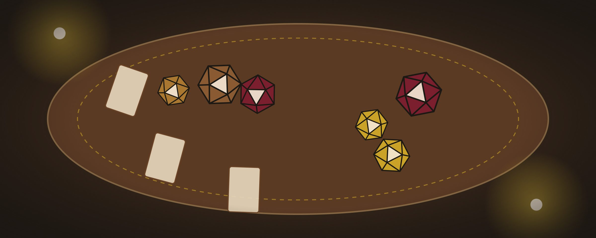
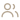
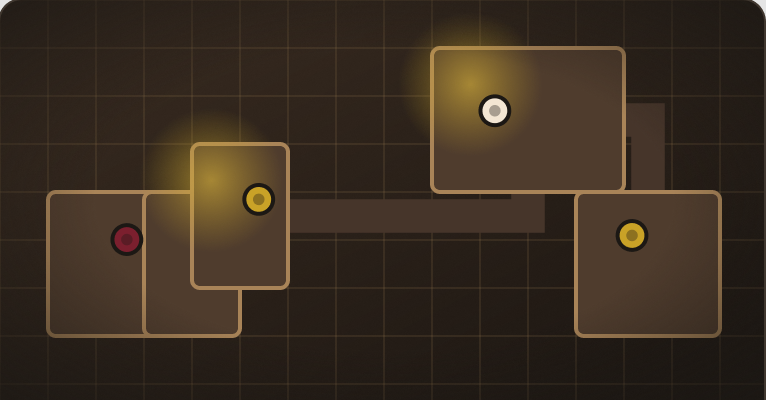
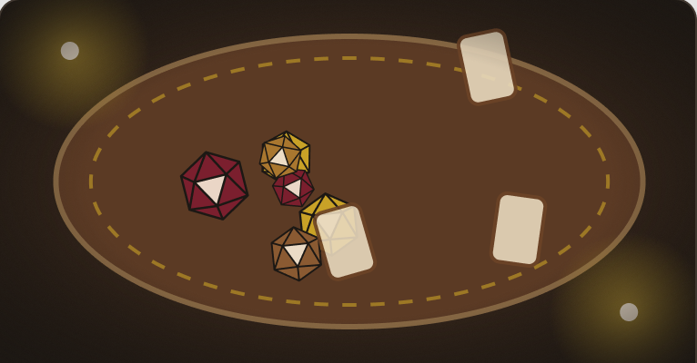

Ao vivo 128 assistindoCripta do Rei Cinza — Sessão 12
Mestre: Fernanda · Sistema: 5e · 4 jogadores

Acompanhe sessões de RPG ao vivo, sem aparecer na mesa e sem atrapalhar a narrativa.

Ao vivo 128 assistindoMestre: Fernanda · Sistema: 5e · 4 jogadores
Demonstração do protótipo: a transmissão e os números de espectadores são exemplos.
Agora

Mestre: Rafael · Sistema: Tormenta20

86 assistindo

Para mestres
Você decide quando a live começa, quem pode assistir e quando ela termina.
Crie uma sala pública e marque a opção “Permitir espectadores (live)”.
Quando a mesa estiver pronta, clique em “Iniciar live”. A sala passa a aparecer em Lives.
Finalize a transmissão a qualquer momento; a sessão segue normalmente entre os jogadores.
Abra uma sala, libere os espectadores e transmita sua próxima sessão.